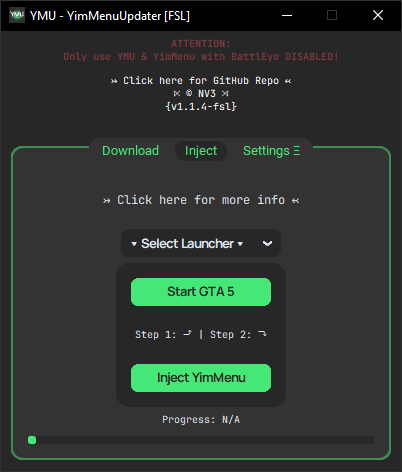
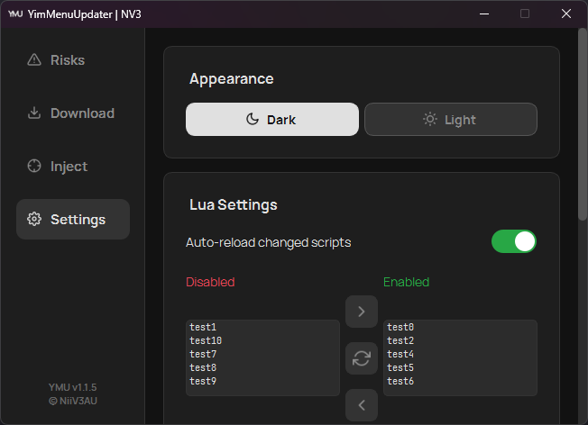

YimMenu Download/Update

Download/Update Tab (v1.1.4)

Inject Tab (v1.1.4)

Settings Tab (v1.1.4)
v1.1.4
- Buttons, "More Info" Updates
Oct 12, 2024
Added Buttons (YimMenu GitHub Repo & FSL's UC-Thread) in Download Tab + updated "more info"-Windows in Download- & Inject-Tab.
v1.1.3
- New Lua list in Settings-Tab
Sep 1, 2024
New Lua list in Settings-Tab - activate/deactivate scripts & discover more luas.
v1.1.2
- Bugfix Progressbar
Aug 29, 2024
Fixed progressbar freezing.
pip install requests requests-cache win10toast customtkinter psutil pyinjector BeautifulSoup4 Pillow.